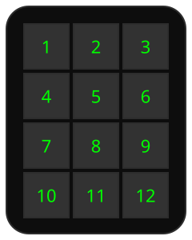

12 keys, 3 columns × 4 rows, numbered front-to-back, top-to-bottom. Each key in the SVG is <g id="key-N" data-key="N"> so a design can highlight the one being edited.
A schematic, not a traced outline. Check the real button set and order on your own unit.
| Key | Bound to |
|---|---|
| 1 | Keyboard: 1 |
| 2 | Keyboard: 2 |
| 3 | Macro: Burst |